- Хэллоуин
- Пятница 13
- Кошмар на улице Вязов
- Восставший из ада
- Пила
- Техасская резня бензопилой
- Ужас Амитивилля
- Поворот не туда
- Дети кукурузы
«Хэллоуин» — серия фильмов ужасов, популярных в 1980-х годах. Создателями являются американский режиссёр Джон Карпентер и американский продюсер сирийского происхождения Мустафа Аккад. Роль главного героя фильмов —
Оригинальные фильмы
-
Хэллоуин (1978)
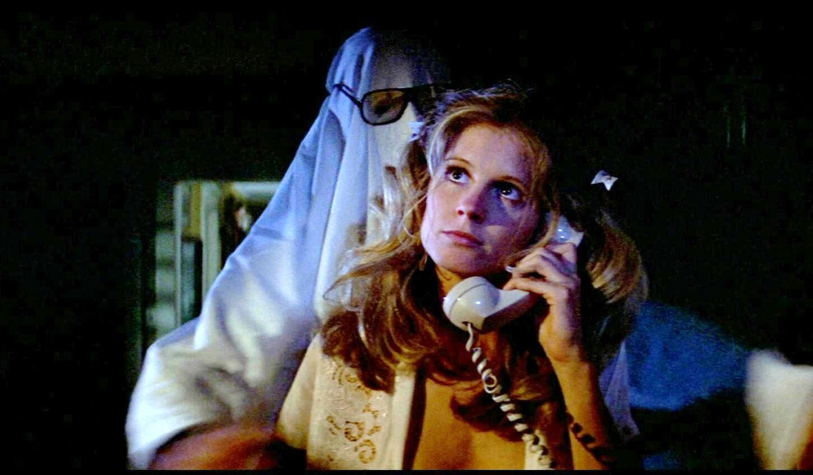Город Хэддэнфилд, канун Хэллоуина. Шестилетний Майкл Майерс убивает свою старшую сестру Джудит. 15 лет спустя подросший Майкл сбегает из психиатрической лечебницы и возвращается в родной город, начиная преследовать, а затем убивать группу подростков, пока в живых не остаётся только школьница Лори Строуд, приглядывающая за малышом Томми Доэйлом. Между тем, психиатр Майерса, доктор Лумис, отправляется на поиски сумасшедшего убийцы...
-
Хэллоуин 2 (1981)
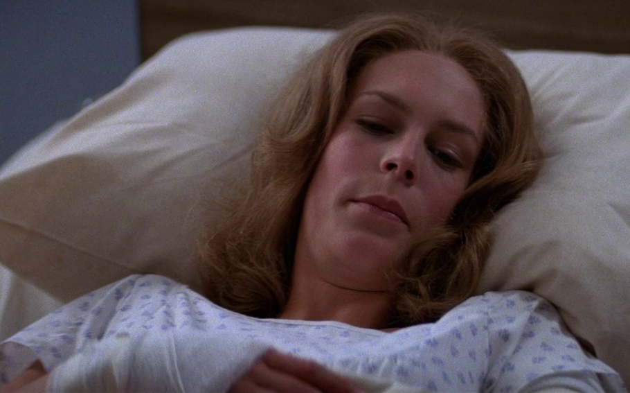Той же ночью Лори Строуд — единственную выжившую в кровавой резне, устроенной Майклом Майерсом в Хэллоуин — доставляют в местную больницу. Тем временем, доктор Лумис продолжает поиски сбежавшего с места преступления Майкла, который приходит в больницу за тем, чтобы закончить начатое — убить свою сестру...
-
Хэллоуин 3: Сезон ведьм (1982)
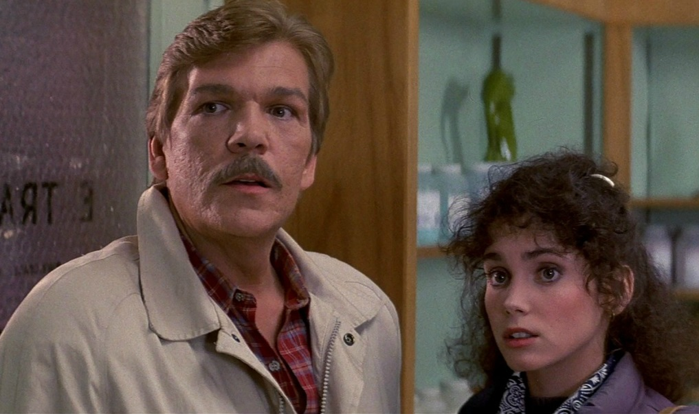В начале фильма видно, как пожилой человек от кого-то убегает по ночным улицам Северной Калифорнии. На него нападает какой-то звероподобный субъект, но человеку удаётся скрыться от него. Он попадает в местный госпиталь в неадекватном состоянии и всё время твердит «они убьют, убьют нас всех». Ночью его убивает на больничной койке странный человек, совершив убийство, он выходит на улицу, где садится в машину и сжигает себя, облив предварительно бензином.
-
Хэллоуин 4: Возвращение Майкла Майерса (1988)

30 октября 1988 года. После кровавой резни в Хэддонфилде прошло десять лет. Майкл Майерс находится в коме. Он парализован и уже никогда не сможет ходить. Его готовят к транспортировке в государственное лечебное заведение, ну а власти штата рады избавиться от такого пациента, как Майерс.
-
Хэллоуин 5: Месть Майкла Майерса (1989)
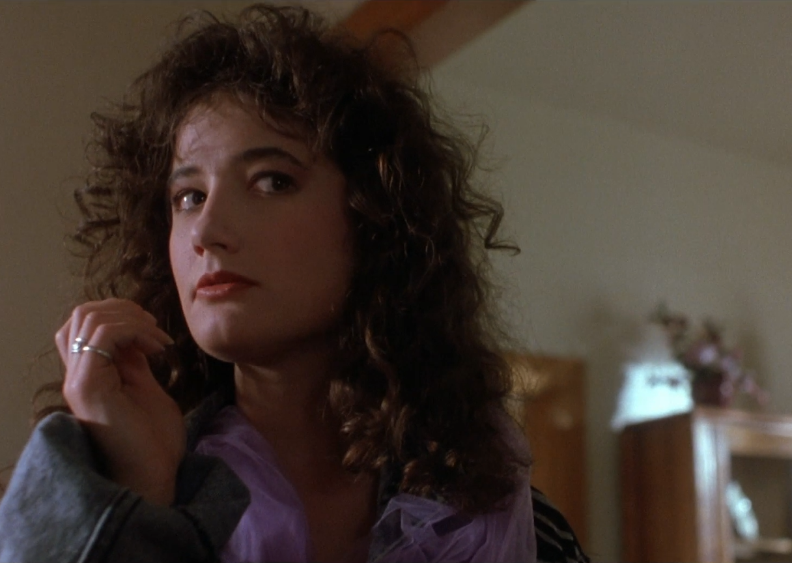Прошёл год со времён событий предыдущей части. А это означает, что вновь близится Хэллоуин, и снова людям предстоит надевать страшные маски. Майкл Майерс в очередной раз устраивает мясорубку в городе Хэддонфилд, штат Иллинойс, но людей он отправляет на тот свет из идейных соображений: ему нужна его родная племянница — девочка Джейми.
-
Хэллоуин 6: Проклятье Майкла Майерса (1995)
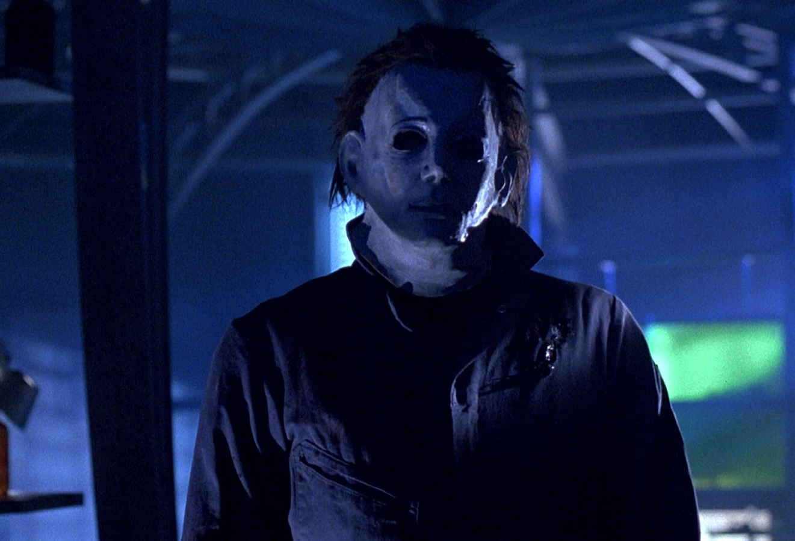Повзрослевший Томми Дойл ждёт возвращения Майкла каждый Хэллоуин — однажды он слышит по радио голос Джейми, недавно родившей ребёнка. Девушка просит помощи у доктора Лумиса, которого Томми встречает после того, как нашёл малыша Джейми, спрятанного от Майкла. Доктор Лумис подозревает, что Майерс ещё вернётся — ведь согласно древнему обряду, он должен убить всю свою семью. Теперь его главная цель — сын Джейми, а, кроме того, в доме Строудов поселилась двоюродная сестра Лори со своей семьёй.
-
Хэллоуин: 20 лет спустя (1998)
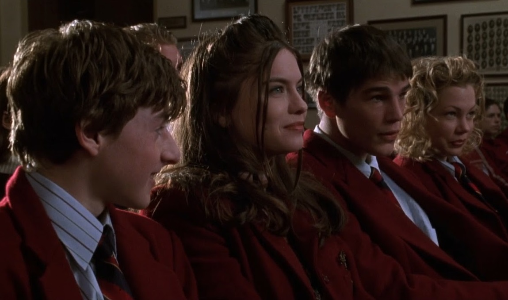Картина, приуроченная к 20-летнему юбилею первой части франшизы возвращает зрителей к повествованию о Лори Строуд, которая якобы погибла в автокатастрофе — зрители узнают, что много лет назад девушка инсценировала свою гибель, покинула Хэддонфилд и взяла себе новое имя — Кэри Тэйт.
-
Хэллоуин: Воскрешение (2002)
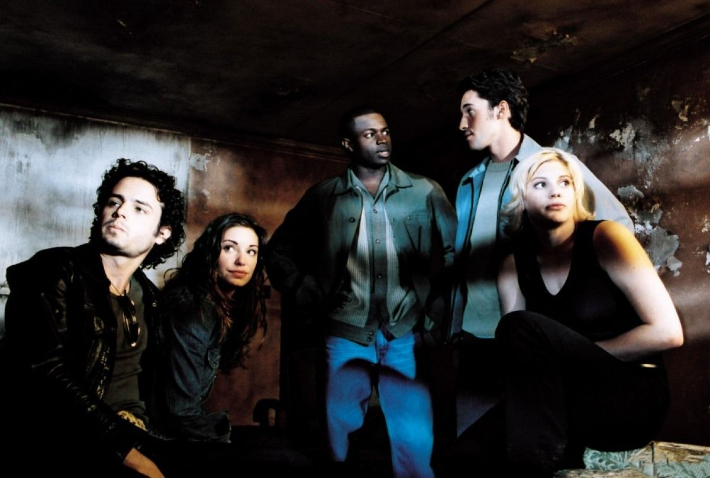В последнем фильме оригинального сериала, Майклу удаётся, наконец, убить Лори Строуд. Он возвращается в родной дом в Хэддонфилде, который всё ещё пустует. Однако вскоре там появляется группа молодёжи, решившая снимать реалити-шоу, в котором несколько парней и девушек проводят ночь в доме убийцы.
-
Хэллоуин (2007)
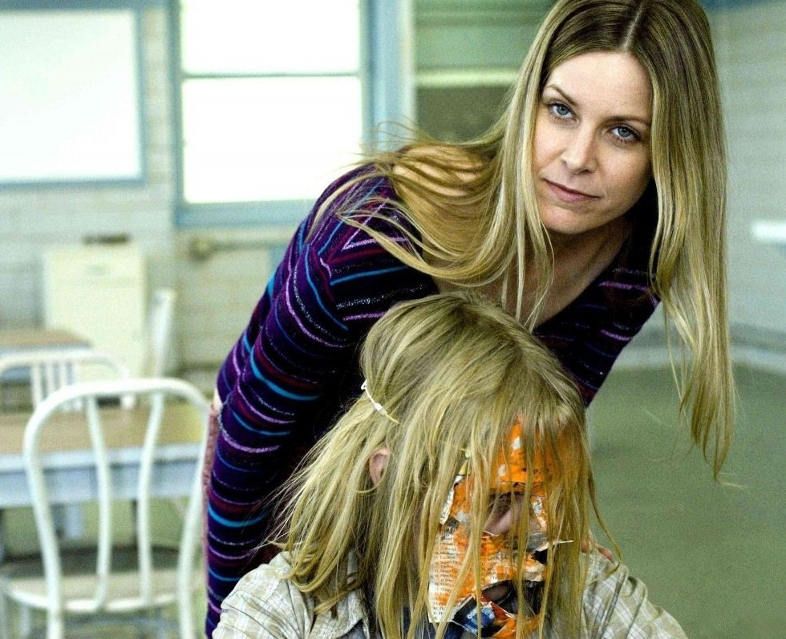В Хэдонфилде в Иллинойсе живёт 10-летний Майкл Майерс, у которого неблагополучная семья: его мать Дебра работает танцовщицей в стрип-клубе, его старшая сестра Джудит совершенно распущена, а его отчим Ронни Уайт — инвалид-алкоголик. Ещё в семье есть месячная младшая сестра Майкла Анджела. В канун Хэллоуина у Майкла в школе происходит стычка со школьными хулиганами, в результате чего директор вызывает Дебру и своего знакомого, детского психиатра, Сэмюэля Лумиса. Они показывают шокированной Дебре труп кошки, которая была найдена в его рюкзаке, и фотографии замученных животных. Лумис сообщает Дебре, что из-за нездоровой обстановки в семье у её сына явно нарушена психика (дома он часто носит маску клоуна, потому что она, по его словам, «скрывает его уродство») и ей следует быть готовым к тому, что в будущем Майкл может от убийств животных перейти к более кардинальным мерам. Тем временем Майкл, подкараулив за пределами школы одного из хулиганов, до смерти забивает его огромным суком. В тот же вечер, когда Дебра уходит на работу, Майкл, надев свою маску, сначала перерезает Ронни глотку, затем забивает до смерти битой бойфренда Джудит Стива, а затем закалывает ножоми саму Джудит. После приходит в комнату к Анджеле и желает ей весёлого Хэллоуина.
-
Хэллоуин 2 (2009)
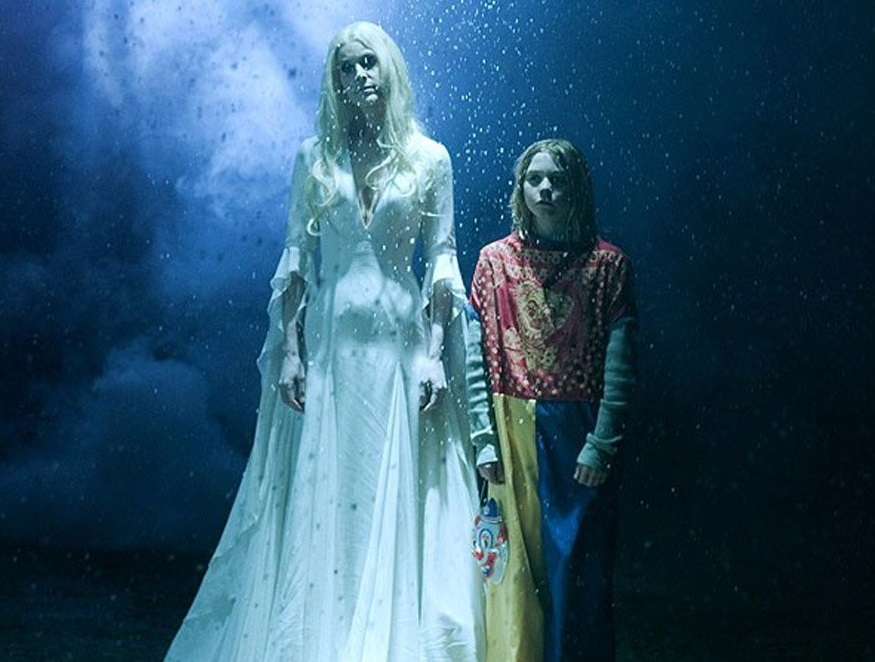В начале фильма показываются флешбек с Майклом во время его пребывания в «Смитс-Гроув» в один из визитов его матери Дебры. Далее действие переносится в Хэддонфилд. Мы видим Лори, бредущую по дороге. Её находит шериф Брэкетт и, замечая у неё пистолет, забирает его. К дому, где она застрелила Майкла, съезжается полиция и «скорая помощь». Тело Майкла грузят в машину «скорой помощи», но в процессе перевозки она попадает в аварию. Майкл «просыпается» и сбегает, ведомый иллюзиями своей матери и его самого в детском обличии. Лори доставляют в госпиталь, но там объявляется и Майкл. После нескольких зверских убийств он добирается до неё, и в тот момент, когда он собирается ударить её топором, она просыпается. Всё время после покушения она страдает от кошмаров и галлюцинаций. Майкл Майерс, тем временем, вновь начинает охоту на неё. На своём пути он опять убивает несколько человек, в том числе Энни, подругу Лори, а также полицейского, охранявшего её по приказу Брэкетта.
-
Хэллоуин (2018)
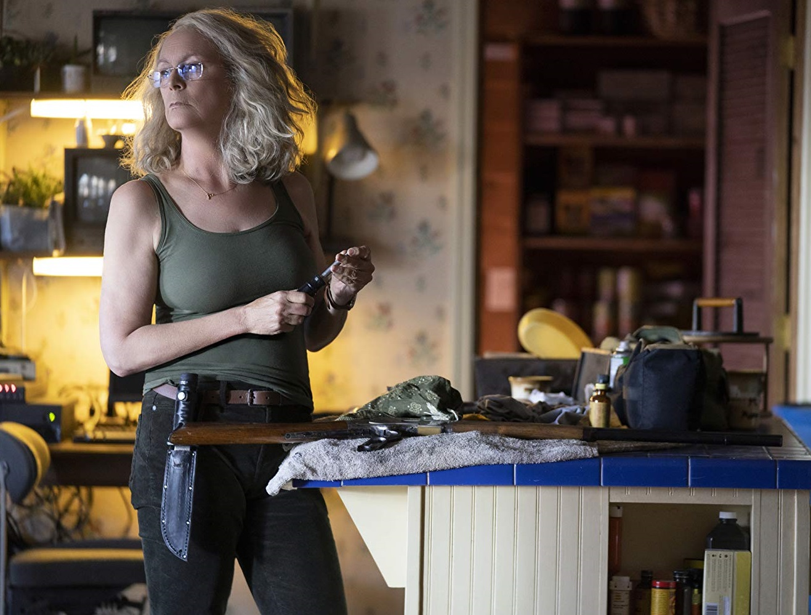Действие происходит на Хэллоуин 2018 года, спустя ровно 40 лет после Хэллоуина 78-го года. Майкл Майерс после той ночи был схвачен и снова помещён в лечебницу в Смитс-Гроув. Присутствовавший при его аресте Фрэнк Хокинз помешал Сэму Лумису, психиатру, приставленному к Майклу, убить последнего — Лумис был твёрдо уверен, что Майкл настоящее «зло в человеческом обличии». После смерти Лумиса психиатром Майкла был назначен ученик Лумиса, доктор Ранбир Сартан. Лори Строуд, единственная выжившая в ту ночь жертва Майкла, за это время родила дочь Карен, но все годы её преследовал страх, что настанет день, когда Майкл вырвется на свободу, чтобы довершить начатое. В итоге это превратилось в навязчивую идею, из-за чего Лори сначала развелась с мужем, а затем была лишена родительских прав на Карен — всё детство Карен прошло в постоянной муштре, где мать учила её обращаться с оружием. Карен, ставшая психологом, теперь живёт с мужем Рэем и дочерью Эллисон, которой она запрещает видеться с бабушкой. Лори же поселилась в доме посреди леса, где постоянно тренируется в стрельбе, готовясь к встрече с Майклом.
Ремейки

«Пятница 13-е» — американский кино-сериал ужасов. Создателем сериала яв-ляются американский режиссёр Шон Каннингем и сценарист Виктор Миллер. Роль главного героя фильмов — Джейсона Вурхиза — сверхъестественного серийного убийцы в хоккейной маске, исполнило множество актёров.
Оригинальные фильмы
-
Пятница, 13-е (1980)
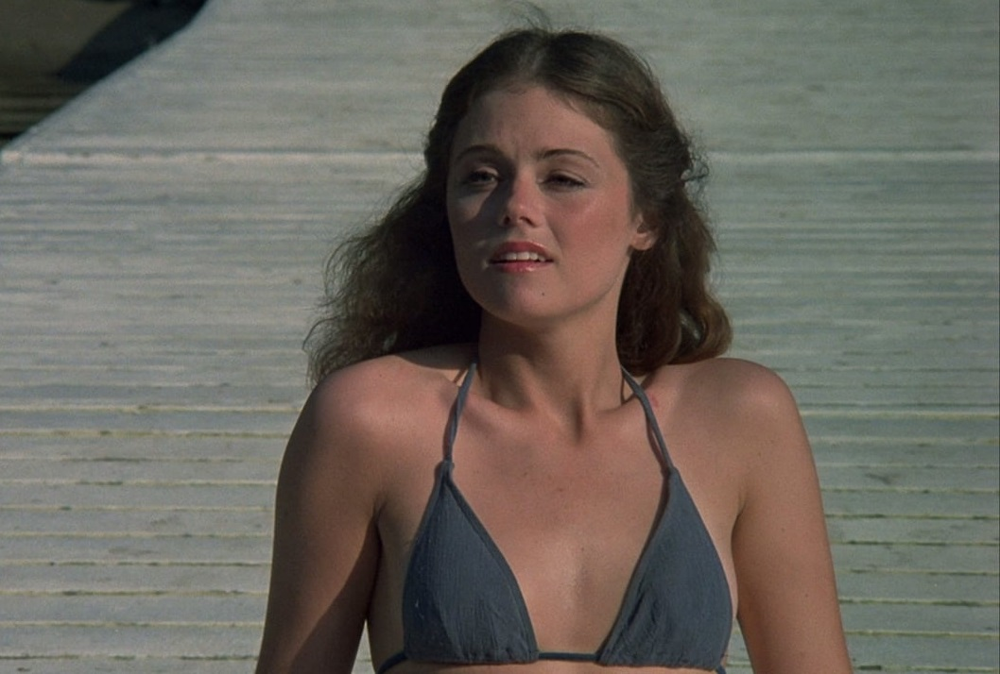Лагерь «Хрустальное озеро», 1958 год. Вожатые Клодетт и Барри залезают на чердак и занимаются там любовью. Внезапно кто-то заходит в их «тайное место» и убивает их обоих. 1979 год. Новый хозяин лагеря Стив Кристи, отбросив суеверия и предрассудки, решает отремонтировать и подготовить лагерь для летнего отдыха. В одном из первых эпизодов фильма девушка по имени Энни едет в лагерь, чтобы поработать там поваром. Добродушный водитель грузовика Эннос решает подвезти её. По пути они встречают местного сумасшедшего Ральфа, который говорит им, что лагерь «Хрустальное озеро» проклят и все они обречены. Девушка не верит ему и продолжает путь.
-
Пятница, 13-е. Часть 2 (1981)
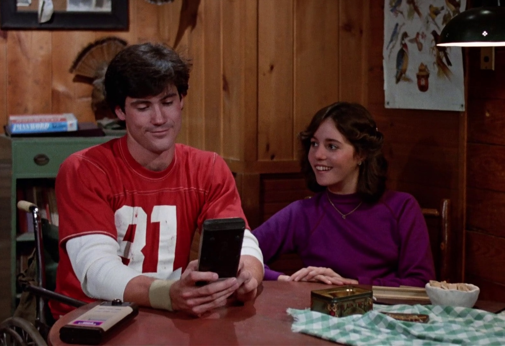Джейсон Вурхиз выслеживает, а затем и убивает последнюю выжившую в кровавой бойне, устроенной Памелой Вурхиз в лагере на берегу Хрустального озера — Элис Харди. Перед смертью Элис находит у себя в холодильнике голову Памелы Вурхиз. Девушка погибает прямо в своём доме от рук Джейсона, мстящего за смерть матери, однако её тело так и не нашли. 1985 год. Пять лет спустя лагерь вновь собирается открыться. Псих Ральф вновь также предупреждает новую команду вожатых о нависшей над ними опасности, однако кто будет слушать сумасшедшего старика? Возглавляет компанию вожатых молодой мужчина по имени Пол, который искренне считает, что основная опасность для людей в этих краях, это медведи. В первую же ночь Пол рассказывает ребятам легенду о мальчике по имени Джейсон Вурхиз и о том, как каждую пятницу 13 числа, в свой день рождения, он возвращается из мёртвых, чтобы отомстить за смерть матери.
-
Пятница, 13-е. Часть 3 в 3D (1982)
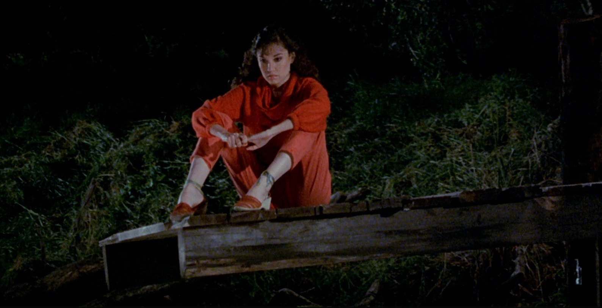На следующий день после событий предыдущей части, сбежавший с места кровавой бойни Джейсон оказывается в магазине, где крадёт для себя новую одежду, убивает его владельцев — супружескую пару Гарольда и Эдну, а затем прячется в частном домике. Тем временем, девушка по имени Крис, на которую в местных лесах напал таинственный незнакомец два года назад, возвращается вместе с друзьями — Дэбби, Энди, Шелли, Верой, Чаком и Чили — в домик родителей неподалеку от Хрустального озера, где их встречает молодой человек Рик. Ребята не знают, что Джейсон прячется в амбаре Крис.
-
Пятница, 13-е: Последняя глава (1984)
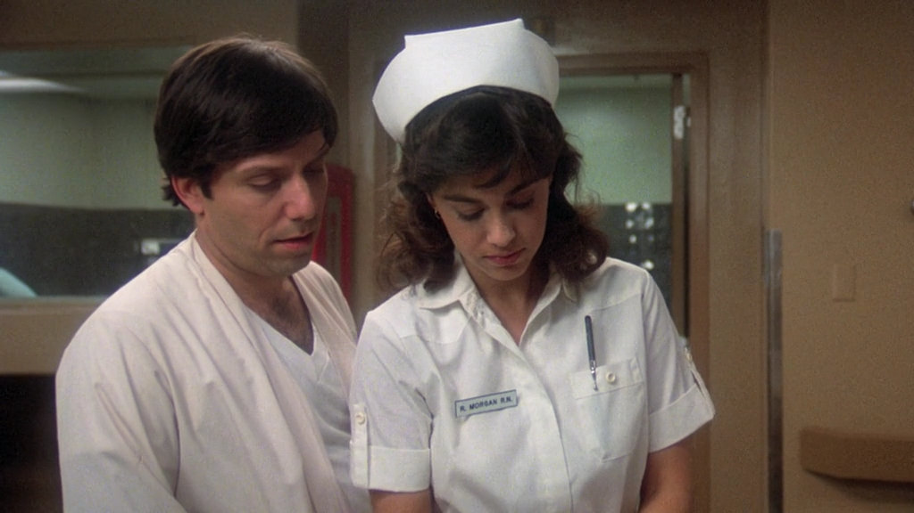Сразу же после событий предыдущей серии Джейсона доставляют в местный морг, где маньяк вскоре приходит в себя и сбегает, убив доктора Акселя и медсестру Морган. Джейсон направляется домой, на Хрустальное озеро. Тем временем, группа ребят — Пол, Сэм, Сара, Даг, Тед и Джимми — обосновалась по соседству с семейством Джарвисов. Сестра Триш и брат Томми выходят, чтобы поприветствовать шумную компанию, большая часть которых сразу же кладёт глаз на красавицу Триш. Затем, отправившись по делам в город, Джарвисы подбирают молодого человека по имени Роб — любителя природы и путешествий автостопом.
-
Пятница, 13-е: Новое начало (1985)
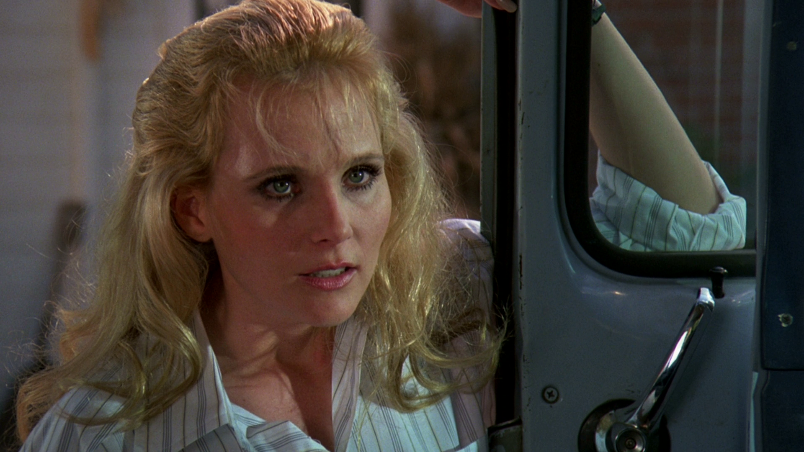Прошло 5 лет после событий фильма «Пятница, 13-е: Последняя глава». 17-летний Томми Джарвис находится на лечении у доктора Леттера. Томми мучают кошмары о Джейсоне, и даже лекарства не помогают ему забыть кровавого убийцу. Однажды Вик, один из пациентов клиники, убивает другого постояльца, Джоуи. Этой ночью подростки Пит и Винни отправляются на встречу с девушками. Винни получает фальшфейер в рот, а Питу перерезают горло. Один из работников больницы, Билли, ждёт свою девушку Лану и погибает от удара топором по голове. Лану убивают тем же топором.
-
Пятница, 13-е: Джейсон жив (1986)
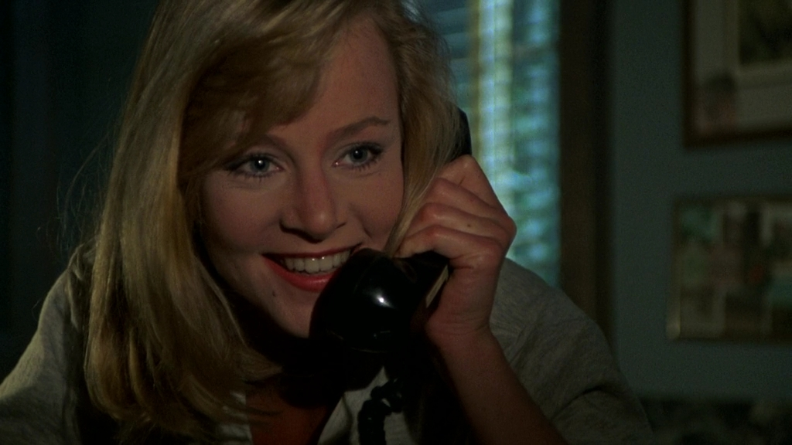Томми не даёт покоя мысль, что Джейсон жив. Вместе со своим другом Хавесом он решает раскопать могилу убийцы, чтобы удостовериться в его смерти. Тело маньяка действительно в могиле, но после удара молнии он оживает… Джейсон убивает Хавеса, пробив кулаком грудную клетку парня, и тот падает прямо в его гроб. Томми возвращается в лагерь на Хрустальном Озере и пытается предупредить шерифа, Майка Гарриса, но тот не верит Томми и запирает его в участке. Тем временем, Джейсон возвращается на озеро, по пути на лесной дороге встречает едущих туда на машине Даррена и Элизабет, он убивает их и оставляет их тела в лесу.
-
Пятница, 13-е: Новая кровь (1988)
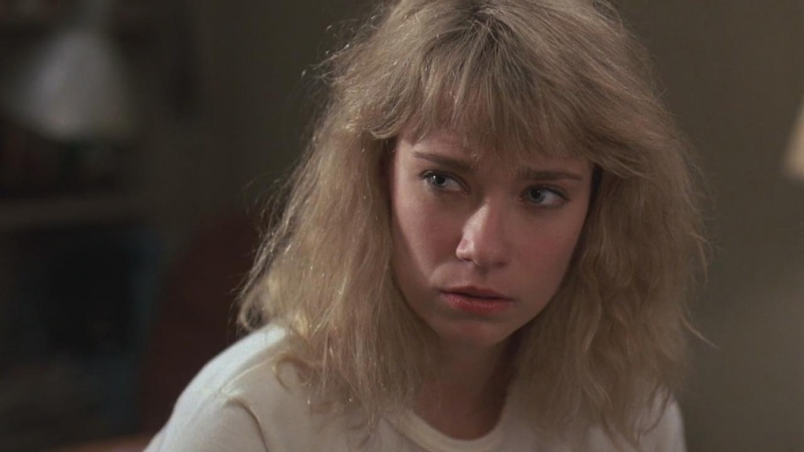Прошло несколько месяцев после событий предыдущего фильма. Семилетняя Тина Шепард слышит, как её отец-алкоголик бьёт её мать. Эмоциональная травма открывает в Тине способности к телекинезу, что приводит к смерти её отца в Хрустальном Озере. Прошло 10 лет. Тина находится на лечении у доктора Круза, который изучает её способности. Тем временем в соседний дом на празднование дня рождения Майкла приезжают несколько подростков: Мэдди, Робин, Эдди, Мелисса, Дэвид, Рассел, Сандра, Бэн, Кейт и двоюродный брат Майкла Ник. Нику нравится Тина, между ними возникает привязанность.
-
Пятница, 13-е: Джейсон штурмует Манхэттен (1989)
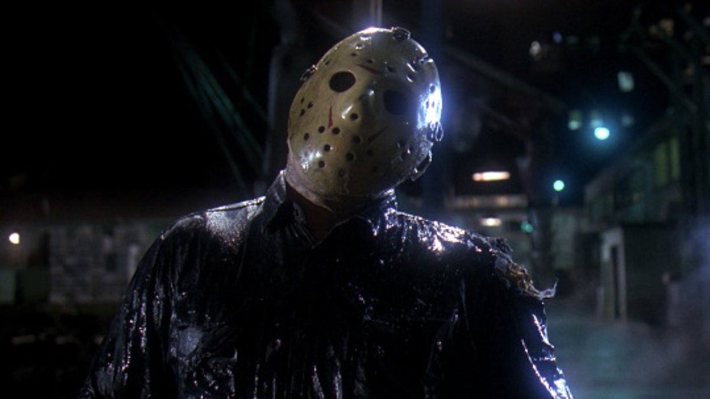Проходит год с момента событий предыдущего фильма. Короткое замыкание от лодки воскрешает Джейсона, который мгновенно начинает убивать вновь. Первыми становятся выпускники Джим и Сьюзи, которые занимались сексом в лодке на озере. Там же Джейсон находит новую хоккейную маску, которой Джим пугал Сьюзи.
-
Джейсон отправляется в ад: Последняя пятница (1993)
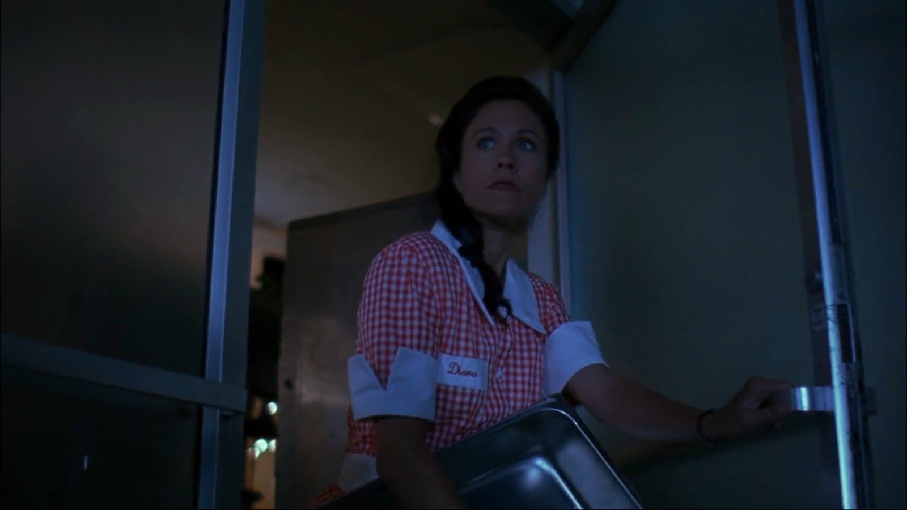В одиноко стоящем домике вблизи леса девушка собирается принять ванну. За ней наблюдает Джейсон Вурхиз. Увидев маньяка, девушка убегает. Начинается погоня, и Джейсон попадает в ловушку, устроенную ФБР — его расстреливают, а потом и вовсе взрывают. Однако Джейсон так просто не сдаётся, его чёрное сердце продолжает биться и захватывает тело чернокожего патологоанатома, делавшего вскрытие обгоревшего трупа маньяка.
-
Джейсон X (2001)

В 2010 году Джейсон Вурхиз (Кейн Ходдер) захвачен правительством Соединённых Штатов и содержится в Исследовательском центре Crystal Lake. Правительственный ученый Роуэн Лафонтен (Лекса Дойг) решает поместить Джейсона в криогенный стазис после нескольких неудачных попыток убить его. В то время как рядовой Сэмюэль Джонсон (Джефф Геддис) накрывает Джейсона одеялом, доктор Виммер (Дэвид Кроненберг), сержант Маркус и несколько солдат надеются продолжить исследование быстрой регенерации клеток Джейсона и решают его забрать. Они стягивают одеяло с его тела, но вместо этого находят Джонсона мёртвым.
-
Пятница, 13-е: Фредди против Джейсона (2003)
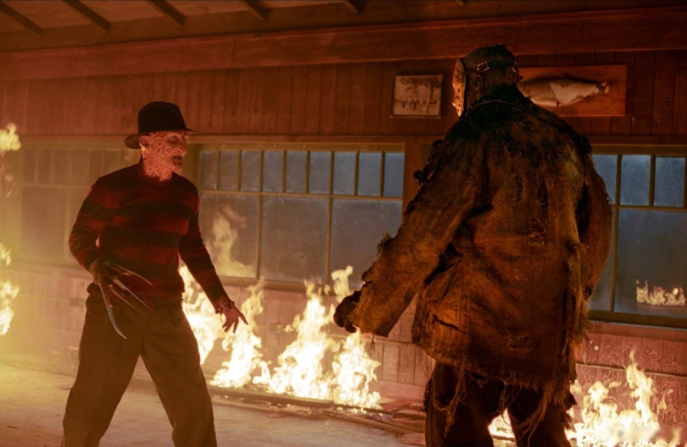Фредди Крюгер томится в Аду, а разъярённые родители нашли способ спасти своих детей, заставив их забыть о маньяке — теперь Крюгер беспомощен и не может сбежать из заточения. Чтобы вселить в детей страх, Фредди находит Джейсона Вурхиза и убеждает его отправиться на улицы Вязов, притворившись его матерью Памелой. Вурхиз отправляется в Спрингвуд, чтобы наказать подростков — Фредди уверен, что в таинственных убийствах обвинят его, и в городе вновь воцарится страх, который придаст ему необходимые силы.
-
Пятница, 13-е (2009)
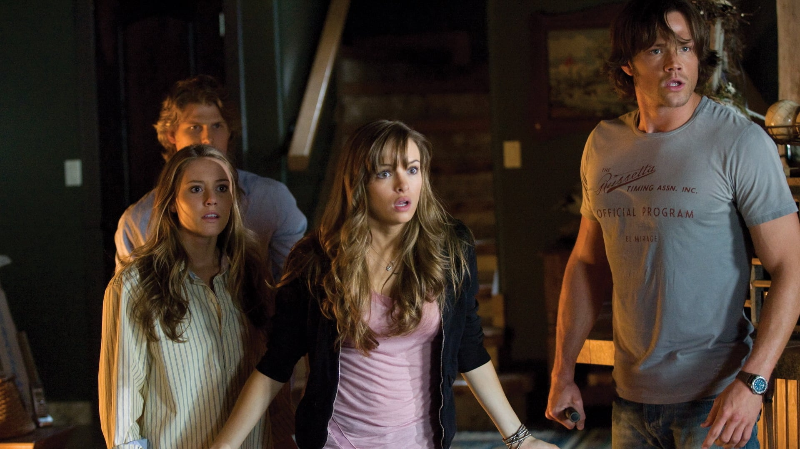13 июня 1980 года, маленький Джейсон Вурхиз стал свидетелем того, как его мать была обезглавлена вожатой, Элис Хардли, пытавшейся сбежать от миссис Вурхиз, сошедшей с ума и устроившей кровавую резню в лагере на берегу Хрустального озера. Около 30 лет спустя, группа молодых ребят — Уэйд, Ричи, Майк, Уитни и Аманда — приезжают к Хрустальному озеру, чтобы провести выходные на природе. Сидя у костра, Уэйд рассказывает друзьям историю лагеря «Хрустальное озеро», однако никто ему не верит. Однако Джейсон, потерявший свою маску появляется и разозленное чудовище перебивает всю подростковую компанию.
Кроссовер
Ремейки
«Кошмар на улице Вязов» — популярный многосерийный фильм ужасов 1980-х годов. Создателем концепции и первого фильмов является американский режиссёр и сценарист Уэс Крэйвен. Главный герой фильмов — Фредди Крюгер — сверхъестественный серийный убийца в исполнении Роберта Инглунда.
Оригинальные фильмы
-
Кошмар на улице Вязов (1984)
Тине Грей (Аманда Уайсс) всё время снится один и тот же кошмарный сон, в котором она ходит по пустынной котельной, а затем некий человек (Роберт Инглунд) с обожжённым лицом, в грязном полосатом свитере, с перчаткой на правой руке, снабжённой лезвиями на пальцах, пытается её убить. Она рассказывает об этом своей подруге Нэнси (Хизер Ландженкамп), и выясняется, что ту преследует тот же кошмарный сон. Вскоре Нэнси, её парень Глен Ланц (Джонни Депп) и парень Тины Род Ллейн (Хсу Гарсия) решают переночевать у Тины в доме, потому что её мать уехала, а девушка из-за своих снов боится теперь спать одна. Этой ночью Тине снится сон, что человек с обожжённым лицом нападает на неё на заднем дворе её дома. Однако порезы, которые он наносит лезвиями перчатки, проявляются на спящей Тине в реальности, и она погибает. Род, который лежал рядом с ней, лишь видел, как на теле Тины сами собой проявляются кровавые порезы.
-
Кошмар на улице Вязов 2: Месть Фредди (1985)
Фильм открывает сцена кошмарного сна, который видит главный герой Джесси Уолш до того, как с криками ужаса проснуться в своей комнате: школьный автобус медленно едет по улице, останавливаясь на каждой остановке и высаживая учеников после школьного дня. Но неожиданно он набирает скорость, и уже через мгновение автобус с Джесси и ещё двумя девочками балансирует над пропастью. А на месте водителя оказывается зловещий мужчина в шляпе, полосатом свитере и в перчатке с лезвиями вместо пальцев на правой руке. Через пять лет после событий первого фильма, в дом № 1428 на улице Вязов въезжает новая семья. Юный Джесси Уолш подвозит каждый день до школы очаровательную девушку Лизу Уэббер. В школе у Джесси возникают странные взаимоотношения с местным задирой Роном Грейди — они то дерутся, то весело проводят время. После драки, устроенной во время тренировок, тренер Шнайдер оставляет ребят отбывать наказание, отжимаясь на спортивном поле. Грейди рассказывает юноше о том, почему дом на улице Вязов так долго не могли продать: по слухам, девушка, которая жила там до него, сошла с ума после того, как увидела, как её парня, живущего напротив, убил какой-то маньяк.
-
Кошмар на улице Вязов 3: Воины света (1987)
Кристин Паркер (Патрисия Аркетт) - юной девушке, живущей в городке Спрингвуд с матерью, очень давно снятся жуткие сны. Едва заснув, она оказывается в старом брошенном доме по адресу «Улица Вязов, 1428». Девушку, вошедшую в дом из любопытства, преследует странный мужчина: его лицо всё в невероятных ожогах, на голове — широкополая шляпа, а на правой руке — перчатка с лезвиями. Каждый раз он пытается убить её. Всё в доме подчинено ему: ловушки, жуткие образы мертвых детей, все попытки бегства обращаются в ничто. Угроза, исходящая от этого таинственного безумца, становится всё ощутимей — Кристин просыпается, стоя в ванной с лезвием в руке, глядя, как её кровь течёт из разрезанной вены. Девушке не удаётся объяснить матери, что поступила так не по своей воле, что её сны куда опасней реальности, и миссис Элейн Паркер (Брук Банди), которая никогда не уделяла особого внимания странному поведению дочери, отдаёт дочь в психиатрическую лечебницу под названием «Уэстен Хиллс». Кристин становится пациенткой психоаналитика — доктора Нила Гордона (Крейг Воссон). Под его опекой находятся много ребят — ровесников Кристин и её одноклассников, которых также мучают кошмары. Ненси Томпсон (Хизер Ландженкамп) удаётся успокоить Кристин. Главного врача, доктора Симс, впечатляет умение девушки работать с пациентами. Ненси подросла, окончила колледж, вернулась в родной город. Теперь она занимается исследованиями в области расстройств сна. Едва заслышав о кошмарах, она прибыла в клинику, чтобы помочь ребятам.
-
Кошмар на улице Вязов 4: Повелитель сна (1988)
Кристен, Джоуи и Кинкейд после выпуска из лечебницы Уэстен-Хиллз стали жить нормальной жизнью и ходить в школу. У Кристен появились новые друзья: Элис, молодая и умная девушка; Шила, страдающая от астмы; Дебби, девушка, боящаяся насекомых. Также у Кристен появился парень — Рик, боец и брат Элис. Кристен продолжает видеть кошмары, ей кажется, что Фредди вернулся. Во время одного из таких снов, в котором ей снился заброшенный дом с улицы Вязов, она затащила в него Кинкейда и Джоуи. Но парни не поверили опасениям Кристен и попросили её больше не мешать им спать.
-
Кошмар на улице Вязов 5: Дитя сна (1989)
Спустя год после действий предыдущего фильма, Элис Джонсон и Ден Джордан продолжают встречаться и всё у них проходит хорошо. Но Элис продолжают посещать странные кошмары: однажды ей снится, будто она — медсестра по имени Аманда Крюгер, которую по ошибке заперли в отделении психиатрической больницы, в котором содержались самые опасные маньяки и убийцы. Настал день окончания школы. Элис и Ден планируют отправиться в путешествие по Европе. Элис счастлива новой жизни, как и её друзья: Грета, начинающая супермодель, Ивонн, медсестра в больнице, и Марк, художник комиксов. Элис идёт к себе на работу, но неожиданно выходит к развалинам старинной больницы, где она видит, как кричащую беременную монахиню везут на операционный стол. Женщина рожает и её ребёнок, вырвавшись из рук врача, убегает. Элис оказывается в той церкви, в которой победила Фредди год назад, там же находится тот ребёнок, который превращается во Фредди Крюгера.
-
Фредди мёртв: Последний кошмар (1991)
Прошло десять лет. Элис и Джейкоб уехали из Спрингвуда, где Фредди Крюгер убил всех подростков. Последний из них — Джон, пытается выбраться из города, так как за пределами его у Фредди нет силы. Пытаясь выбраться за пределы города, теряя память, Джон оказывается в реабилитационном центре. Там он знакомится с другими подростками — Карлосом, Спенсером и Трейси. Они сбегают из центра и приезжают в Спрингвуд. Подростки, пытаясь покинуть город на фургоне, не могут выехать из него и ездят кругами по улицам. Оказавшись на городской ярмарке, они замечают странное поведение взрослых и отсутствие детей. Затем они решают переночевать в доме № 1428, расположенном на улице Вязов. Подростки отправляются в детский дом и узнают, что у Фредди был ребёнок. Джон считает, что является им, так как Фредди не убил его. Но вскоре Джон погибает, а Фредди, прежде чем убить его, объясняет Джону, что он нужен был ему, чтобы Крюгер смог выбраться из Спрингвуда и убивать за пределами города. Следующим погибает Спенсер.
-
Новый кошмар Уэса Крэйвена (1994)
На съёмках очередной серии фильма «Кошмар на улице Вязов» происходит несчастный случай: новая, технически совершенная перчатка Фредди убивает работников со спецэффектами и ранит Чейза Портера — мужа Хизер Ландженкамп, исполнительницы роли Нэнси. Сын Хизер исчезает непонятным образом. Но вот Хизер просыпается из-за землетрясения и понимает, что это был всего лишь сон. Однако её муж порезал пальцы именно так, как это случилось в её сне. Чейз уезжает на съёмки нового рекламного ролика, а Дилан начинает странно себя вести. Няня мальчика, Джули, считает, что это всё из-за пугающих звонков от сумасшедшего поклонника актрисы — Хизер нервничает, и Дилан чувствует это. Снова раздаётся звонок, но это всего лишь шофёр, который должен отвезти Хизер на шоу, посвящённое девятой годовщине выхода фильма «Кошмар на улице Вязов». Там она встречает своего партнёра, Роберта Инглунда в гриме Фредди. Это пугает девушку.
-
Фредди против Джейсона (2003)
Джейсон прибывает на улицу Вязов и начинает следить за домом № 1428, где когда-то жили Нэнси Томпсон и Джесси Уолш — сейчас же в нём живёт девушка по имени Лори Кэмпбелл со своим отцом-вдовцом. Пока Лори веселится со своими друзьями Киа, Гибб, Блейком и Треем, Джейсон убивает Трея своим мачете. Ребят отвозят в полицейский участок на допрос. Лори засыпает и сталкивается с Крюгером, придав ему сил. Фредди пытается убить и Блейка, но не может, однако в этот момент Джейсон убивает юношу и его отца, сидящих на крыльце собственного дома.
-
Кошмар на улице Вязов (2010)
Дождливый вечер в тихом пригороде Спрингвуда оборачивается трагедией. В кафе юноша по имени Дин перерезает себе горло на глазах своей девушки, Крис. Перед этим он признаётся другой своей подруге, официантке Нэнси, что не может спать, потому что видит во сне человека, который его преследует. На похоронах Дина Крис замечает маленькую девочку в изрезанном платье. На установленном в честь Дина вывешены его детские фото, на одном из них Крис снова видит ту же девочку, играющую с Дином. Крис понимает, что на фотографии изображена она сама в пятилетнем возрасте. Раньше Крис была уверена, что познакомилась с Дином уже в старших классах. Крис рассказывает своему бывшему парню Джесси о странных обстоятельствах смерти Дина, но он относится к её словам с недоверием. Однако Нэнси верит её рассказу.
Кроссовер
Ремейки
«Восставший из ада» — культовый британский мистический фильм ужасов 1987 года режиссёра и сценариста Клайва Баркера, экранизация его собственной повести The Hellbound Heart, впервые опубликованной в 1986 году в третьем томе антологии Night Visions.
Оригинальные фильмы
-
Восставший из ада (1987)
В первой сцене фильма Фрэнк Коттон, мелкий преступник, покупает на восточном базаре у торговца старинную шкатулку-головоломку. Фрэнк уверен, что шкатулка даёт доступ к неким «неописуемым удовольствиям». В действительности она является ключом к вратам ада; всякий, кто её откроет, становится добычей демонов-сенобитов (англ. cenobites), удовольствием для которых являются боль, пытки и страдания. Вернувшись домой, Фрэнк разгадывает секрет шкатулки и открывает её. Появившиеся сенобиты во главе с Пинхедом (Pinhead; от pin — булавка или гвоздь; и head — голова) разрывают тело Фрэнка на части и полностью уничтожают его, а затем возвращаются в ад.
-
Восставший из ада 2: Обречённый на ад (1988)
После событий первой части Кёрсти Коттон попадает в психлечебницу доктора Чаннарда. Она пытается предупредить окружающих, что матрац, на котором умерла её мачеха, необходимо уничтожить — в противном случае Джулия Коттон может вернуться. Вдобавок, девушка видит странные сны — о некоем военном, собирающем шкатулку Лемаршана и превращающегося в нечто очень знакомое… (Пинхэд до открытия шкатулки).
-
Восставший из ада 3: Ад на земле (1992)
Нью-Йорк. Молодой человек Джей Пи Монро приходит в галерею античного искусства «Пирамида». Здесь он видит гротескную скульптуру (Столб Душ), состоящую из переплетений человеческих тел. На одной из сторон видна Шкатулка Лемаршана и лицо Пинхеда. Странного вида человек, представившись владельцем, не торгуясь продаёт скульптуру.
-
Восставший из ада 4: Кровное родство (1996)
2127 год, космическая станция «Минос». Командир станции доктор Мерчант с помощью робота открывает шкатулку Лемаршана. На станцию в это время высаживаются коммандос и арестовывают Мерчанта за захват и использование станции не по назначению. Техник отряда, Чемберлен, сообщает, что станция выведена из строя, а вся электроэнергия направлена в каюту Мерчанта. Коммандос Риммер допрашивает учёного. Он соглашается всё объяснить и рассказывает историю своего рода.
-
Восставший из ада 5: Инферно (2000)
Детектив Джозеф Торн расследует загадочное убийство своего одноклассника Джея Чо. На месте преступления он находит странную шкатулку и палец ребёнка (пальцы потом оказываются на месте каждого убийства). В свободное от работы время детектив развлекается в мотеле с проституткой Дафной. В ванной он открывает шкатулку и попадает в странное место, где встречается с сенобитами. Утром Джозефу кажется, что это только кошмарный сон, но на работе ему звонит Дафна и просит о помощи. Вернувшись в мотель, детектив находит девушку повешенной на крюке в ванной. Чтобы отвести от себя подозрения, Джозеф оставляет там пустую пачку из-под сигарет с отпечатками пальцев напарника, Тони Нинонина.
-
Восставший из ада 6: Поиски ада (2002)
Кёрсти и её муж Тревор едут в автомобиле и целуются, из-за чего Тревор не справляется с управлением, и машина падает с моста. Водителю удаётся выбраться из тонущей машины, но из-за заклинившей двери Кёрсти тонет в реке. Тревор приходит в сознание уже в больнице. Выясняется, что он уже не первый раз в больнице. Его навещает детектив и, беседуя о катастрофе, сообщает, что тело Кёрсти не было найдено на месте происшествия.
-
Восставший из ада 7: Мертвее мёртвого (2003)
Американская журналистка Эми Кляйн после статьи про наркопритон приходит к своему шефу (и, одновременно, лучшему другу) за очередным заданием. Тот показывает Эми видеокассету из Румынии. На записи запечатлена группа людей (секта) во главе с Винтером а так же ритуальное убийство молодой девушки Марлы; однако та сразу оживает после поцелуя Винтера. Заинтригованная таким положением, Эми немедленно берётся за расследование таинственного ритуала.
-
Восставший из ада 8: Мир ада (2005)
Группа молодых людей, похоронившая загадочно погибшего товарища, выигрывает приглашения на некую вечеринку, посвящённую «Восставшим из ада». Чтобы выиграть приглашение, каждый из них открыл шкатулку-головоломку на тематическом сайте. Приехав в место назначения, они начинают веселиться. Хозяин дома проводит для них экскурсию, на которой они видят страшные вещи. И после этого, они начинают по одному погибать. В итоге их пребывание в доме оказывается лишь галлюцинацией, а сами они лежат в гробах, зарытых в саду. Оказывается, таким образом хозяин пытался отомстить за смерть своего сына, в которой винил его друзей. Однако и для него всё это не остаётся безнаказанным, поскольку Пинхед не позволяет бесцеремонно вторгаться в свои владения...
-
Восставший из ада 9: Откровение (2011)
Стивен Крейвен и Нико Брэдли убегают из дома и отправляются в Мексику. Они снимают самих себя за несколько дней пьяной вечеринки. Мальчики позже исчезают. Мексиканские власти возвращают их вещи своим родителям, в том числе видеозапись, которая была сделанная Стивеном, которая документирует их последние моменты.
-
Восставший из ада 10: Приговор (2018)
Пинхед и Сенобит-Аудитор инквизиции ада рассуждают о том, как можно изменить методы сбора душ, поскольку новейшие человеческие технологии сделали Конфигурации (шкатулки-головоломки Лемаршана, открывающие врата в ад) бесполезными. В это время три детектива — братья Шон и Дэвид Картеры вместе с Кристин Эгертон — расследуют серию жестоких убийств, совершённых преступником по прозвищу «Наставник», который убивает нарушивших, по его мнению, Десять Заповедей.

«Пила» — серия фильмов ужасов, связанных общей тематикой. Идея принад-лежит Ли Уоннеллу и Джеймсу Вану. 23 июля 2010 года (до выхода «Пилы 3D»), серия фильмов была занесена в Книгу рекордов Гиннесса как самый кассовый хоррор-киносериал всех времен.
Оригинальные фильмы
-
Пила: Игра на выживание (2004)
Лицо Адама, лежащего в ванне, целиком наполненной водой, освещает какой-то предмет, который позже уплывает к его ногам. Неожиданно Адам открывает глаза. Поняв, что он лежит под водой, он дёргается и, зацепив ногой цепочку, выдёргивает из ванны затычку. Вода, ещё недавно целиком наполнявшая ванну, стремительно сливается в канализацию. Вместе с ней туда отправляется и предмет, освещавший Адама.
-
Пила 2 (2005)
Майкл приходит в себя в комнате, на голове у него раскрытая маска с шипами внутри («Маска смерти»). Включается телевизор, на экране появляется кукла Билли и она говорит Майклу, что тот — доносчик и стукач. Маска захлопнется и убьёт его, если он за минуту не успеет отыскать ключ, зашитый в его правую глазницу, скальпель прилагается. Сделав несколько попыток, Майкл понимает, что не сможет выколоть свой глаз, и маска, захлопнувшись, убивает его.
-
Пила 3 (2006)
Фильм открывается сценой, которой закончилась «Пила 2» — детектив Эрик Мэтьюз пытается освободиться от цепи, надетой на его ногу. Он ухитряется добраться до своего фонарика и в его свете видит отрезанную ногу доктора Гордона из первой части. Понимая, что это — его единственный выход, он всё же не может сделать этого. Однако потом он ломает ногу крышкой от бачка унитаза, в котором в первой части были спрятаны ножовки, и освобождается от цепи.
-
Пила 4 (2007)
Фильм начинается со сцены в морге. Патологоанатомы вскрывают тело Джона Крамера и в желудке находят диктофонную кассету. На место вскрытия приезжает детектив Хоффман и вставляет кассету, найденную в желудке Крамера, в диктофон. На плёнке Джон обращается к детективу: «Ты там, детектив? Если так, то ты последний, кто готов принять мой вызов. Возможно, тебе повезёт там, где других постигла неудача. Думаешь, я не подвергну тебя испытанию? Обещаю: моя работа будет продолжена. Ты думаешь, всё закончено, потому что я мёртв? Ничего не закончено — игра только началась!»
-
Пила 5 (2008)
Сет просыпается в темном помещении, прикованный к столу. Через некоторое время в комнате зажигается свет и включается телевизор, на экране появляется кукла Билли. Голос с кассеты объявляет Сету, что тот будет подвергнут испытанию за убийство сестры детектива Хоффмана — получив за это преступление лишь пять лет, Сет не осознал ценности человеческой жизни. В этот момент возле потолка зажигается ещё одна лампа, освещающая огромный маятник в виде острого лезвия. Голос объясняет, что Сет должен просунуть свои руки в тиски, расположенные возле стола, и нажать на кнопки, тогда кости его рук будут раздавлены. Если же Сет не сделает этого, то через тридцать секунд маятник начнёт касаться его тела, а через шестьдесят разрежет его пополам. Когда пленка заканчивается, маятник отцепляется от потолка и начинает раскачиваться, с каждой секундой опускаясь все ниже. Сет не сразу решается изуродовать свои руки, однако инстинкт самосохранения заставляет его вложить кисти в тиски. Когда тиски открываются, Сет вытаскивает остатки своих рук, но понимает, что его оковы не открылись, а маятник продолжил свою работу. Через секунды лезвие спускается ещё ниже и начинает резать Сета. Умирая, он замечает, что за всем происходящим кто-то наблюдает из соседнего помещения. Осознав, что игра окончена, Сет даже не кричит от боли. В этот момент маятник спускается ещё ниже и разрезает Сета пополам. В режиссёрской версии Сет ещё успевает прошептать «Я сделал то, что должен был сделать».
-
Пила 6 (2009)
Испытанию подвергаются два мошенника: мужчина и женщина, которые обманывали должников, давая им нереальные для возврата кредиты, а потом отнимая всё их имущество. На головы игроков надеты шлемы со стальными винтами, которые просверлят череп тому, кто положит на весы меньше, по массе, частей собственного тела. Для этого Пила оставил им остро заточенные инструменты. Упитанный мужчина решает вырезать себе кусок живота, а женщина начинает резать себе руку ножом. Поначалу мужчина выигрывает, положив на весы несколько кусков собственного мяса, но девушка, посмотрев на часы и поняв, что времени осталось совсем немного, берёт тесак, с размаху отрубает себе руку и в последний момент кладет её на весы.
-
Пила в 3D (2010)
Главный герой доктор Лоуренс Гордон, о судьбе которого не было известно ничего со времён первой части, отпилив себе ногу, ползёт по длинному коридору. На пути он встречает трубы парового отопления; чтобы избежать смерти от потери крови, он прижигает рану, прислонив её к трубе, и дико кричит от сильной боли.
-
Пила 8 (2017)
Преступник Эдгар Мансен убегает от полиции и оказывается на крыше, где активирует некий механизм. Вызванный им детектив Хэллоран и его коллеги пытаются его задержать, стреляя в его пульт в руке, но кто-то стреляет в грудь. Мансен выживает с пулей у сердца, но оказывается в искусственной коме.
«Техасская резня бензопилой» — американский многосерийный слэшер. В центре сюжета каждого фильма — противостояние группы молодых людей маньяку-убийце по прозвищу Кожаное лицо и его семье каннибалов. Образ Кожаного лица и сюжет первого фильма был частично основан на убийствах маньяка Эда Гина.
Оригинальные фильмы
-
Техасская резня бензопилой (1974)
Полиция и жители Техаса уже долгое время обеспокоены вскрытием могил какой-то шайкой вандалов. В это же время на семейном автофургоне едут пятеро молодых людей, Салли со своим братом-инвалидом Франклином и со своими друзьями Джерри, Пэм и Кирком. Они отправились в этот путь, чтобы удостовериться, что могилу дедушки Салли и Фрэнка не разворотили вандалы. Заодно они решили заехать в старый каменный дом, в котором жил их дед. По пути они подбирают странного парня, который попросил подвезти его до своего дома. Заодно предложил им зайти к его семье домой пообедать.
-
Техасская резня бензопилой 2 (1986)
В 1986 году, через тринадцать лет после событий первого фильма, двое старшеклассников, Базз и Рик, едут по заброшенной трассе в Техасе, на пути к Далласу, где должен пройти футбольный матч. Будучи в сильном опьянении, они используют телефон, чтобы позвонить и троллить в эфире радио диджея Ваниту «Стреч» Брок (Кэролайн Уильямс). Будучи не в силах убедить их повесить трубку, Стреч оставляет линию открытой. Во время поездки, Базз и Рик подвергаются нападению Кожаного лица (Билл Джонсон), который вылез из багажника грузовика. Кожаное лицо срывает крышу, используя бензопилу. После короткой борьбы, Рик пытается застрелить Кожаное лицо из револьвера, но тот срубает Баззу часть головы, и автомобиль в конечном итоге разбивается, убивая Рика.
-
Кожаное лицо: Техасская резня бензопилой (1990)
Маньяк рубит кожу на столе, а за окном стоит испуганная девушка и наблюдает за ним. Маньяк закончил работу и примеряет кожаное лицо. Молодая пара, Мишель и Райан, перегоняют «Мерседес», принадлежащий отцу девушки. Въехав на территорию Техаса, ребята застревают в пробке, образовавшейся в связи с проверкой машин — власти Техаса обнаружили массовое захоронение жертв неизвестного маньяка. Миновав пропускной пункт, некоторое время спустя Мишель и Райан останавливаются возле полуразрушенной бензозаправки, где встречают ковбоя Текса. Текс объясняет Райану, что лучше ехать по новой дороге, которую ещё не успели нанести на карту. А в это время сотрудник бензоколонки начинает стрелять в прибывших людей из ружья, и Мишель и Райан стремительно уезжают на машине по указанной Тексом дороге. Дорога оказалась пустынной, но ночью появляется внедорожник, водитель которого бросает на капот Мерседеса мёртвого койота. Этой же ночью Мишель и Райан встречают маньяка с кожаным лицом, чернокожего мужчину с автоматом в машине и посещают дом семейки каннибалов.
-
Техасская резня бензопилой 4: Следующее поколение (1994)
На выпускном балу Хизер застает своего парня Барри с подругой, а затем в расстроенных чувствах уезжает на своей машине куда глаза глядят. Барри успевает залезть в машину девушки, а на заднем сиденье спрятались их друзья — Дженни и её парень Шон. И вот молодые люди оказываются посреди леса, так как их машина глохнет в самый неподходящий момент. Вскоре молодые люди находят страховой департамент, где встречают агента Дарлу и её мужа Уилмера Сойера, которые предлагают молодым людям переночевать у них дома… Где их ожидает первая встреча с Кожаным лицом и его кровожадной семейкой...
-
Техасская резня бензопилой 5 (2003)
В начале фильма идут псевдодокументальные кадры полицейского расследования деяний семьи Хьюитов, в которых демонстрируются человеческие останки и дом, где происходила кровавая резня топорами, кувалдами и ужасной бензопилой. 18 августа 1973 года группа ребят возвращается из Мексики и направляется на концерт группы «Линерд Скинерд» в Даллас. По дороге они чуть не сбивают девушку, которая ведёт себя странно. Пытаясь оказать ей помощь, путешественники решают отвезти девушку в больницу, однако та что-то говорит об умерших, после чего достаёт из-под платья револьвер и стреляет себе в голову. Перед ребятами встаёт вопрос — что делать с телом? Они приезжают на заправку, владелица которой якобы звонит шерифу и сообщает им, что в настоящее время он занят. Тогда молодые люди пытаются найти шерифа самостоятельно, что приводит их к странному дому. Там они встречают чумазого мальчика — Джедидайю, который постоянно спрашивает о том, что ребята сделали с девушкой на дороге.
-
Техасская резня бензопилой 6: Начало (2006)
Два брата, Дин и Эрик, отправляются со своими подружками Бейли и Крисси в автомобильное путешествие, которое должно стать последним развлечением до того, как их отправят служить во Вьетнам. Дин не хочет отправляться на войну, не зная, что Эрик возвращается на службу лишь для того, чтобы поддержать брата. Юноша не находит в себе храбрости сказать Эрику, что не собирается служить. Тем временем, в доме Хьюиттов появляется шериф Уинстон — единственный представитель власти на всю округу, собирающийся также покидать эти места. Вместе с дядей Томаса, Чарли Хьюиттом, он отправляется на поиски Кожаного лица, обвиняемого в убийстве директора фабрики. Мужчины быстро находят его, однако в этот момент Чарли убивает шерифа, берёт его значок и форму, решив занять место Уинстона.
-
Техасская резня бензопилой 7 3D (2013)
События фильма разворачиваются непосредственно после окончания оригинальной кинокартины. Местный шериф согласился организовать для Джеба Сойера, который и скрывался под Кожаным лицом, честный судебный процесс и предоставить ему адвоката. Однако его намерениям мешает мэр, который ведет за собой толпу людей, жаждущих линчевать кровавого маньяка. Когда ситуация начинает выходить из-под контроля, а горожане начинают готовить петли для убийцы, кто-то бросает в дом Сойера бутылку с зажигательной смесью. Дом сгорает, а вместе с ним в огне гибнут и все, кто в нём находился, включая самого Джеба и его отца. Разумеется, спустя определенное время убийства с помощью бензопилы начинаются снова. Первое предположение шерифа — Джеб Сойер выжил и решил отомстить. Но он ли это на самом деле? И если нет, то кто?
-
Техасская резня бензопилой 8: Кожаное лицо (2017)
В доме Сойеров проходит вечеринка в честь дня рождения младшего члена семьи, Джедидайи. Как подарок на день рождения и призыв к убийствам для семьи, ему преподносят бензопилу и призывают убить человека, которого они обвинили в попытке украсть у них поросят. Джед отказывается, и жертву убивает дедушка Сойер. В 1955 году, Бетти Хартман и Тед Хардести едут по проселочной дороге, когда они встречают, казалось бы, раненого Джедидайю Сойера. Бетти следует за ним в полуразрушенный сарай, где ее тут же убивает семья Сойеров. Ее отец, Шериф Хартман (Стивен Дорфф), приезжает на место преступления, где он находит дочь мертвой. Несмотря на усилия главы семьи Верны, Хартман берет Джедидайю под стражу в качестве мести, отправив его в психиатрическое учреждение, известное как Дом Гормана.
Ремейки
«Ужас Амитивилля» — киносериал, состоящий из 10 фильмов, включая ремейк оригинальной кинокартины 1979 года. Основой концепции фильмов послужил роман Джея Энсона «Ужас Амитивилля». Замысел романа базировался на реальных событиях, произошедших с семьей Латц, которые в декабре 1975 года.
Оригинальные фильмы
-
Ужас Амитивилля (1979)
13 ноября 1974 года полицейский участок округа Саффолк был взбудоражен телефонным звонком, который привел полицейских в Лонг-Айленд, в Амитивилль, в дом на Олшен-Авеню, 112. Внутри большого колониального дома они увидели ужасающую сцену преступления, которое потрясло привычный мирный образ жизни местных жителей: была зверски убита целая семья. В последующие дни Рональд Дефео признался, что намеренно застрелил из ружья сначала родителей, потом четырёх родных братьев и сестер, когда они спали, повинуясь приказу «голоса» дома совершить эти ужасающие убийства.
-
Амитивилль 2: Одержимость (1982)
Семья Монтелли переезжает в дом своей мечты, однако практически сразу каждый понимает, что с домом что-то не так. Духи прошлого запугивают каждого члена семьи, разрушая их узы изнутри. Сначала странный случай с кухонным краном: открыв его, мать видит, как из крана течет кровь вместо воды. Когда привозят вещи семьи, доставщик спускает их в подвал. Обнаруживает там странный проем в стене шкафа. Когда доставщик решается проверить, что находится в потайной комнате, он натыкается на странное множество мух. В следующей сцене «нечто» выбирается наружу из подвала и пугает хозяйку дома. Она понимает, что происходит что-то странное.
-
Амитивилль 3D: Демон (1983)
Риелтор Клиффорд Сандерс уговаривает недавно разведённого Джона Бакстера, работающего в журнале Reveal, купить дом 112 на Оушн-Авеню, несмотря на попытки коллеги Джона, Мэлани, отговорить его. Готовя дом к переезду Джона, Клиффорд приходит туда один. Услышав шаги, он поднимается наверх, где его запирает в одной из комнат невидимая сила, а стая мух бросается на мужчину, пожирая плоть — на утро в доме находят тело риелтора, скончавшегося от сердечного приступа. Джон уверен, что это обычный несчастный случай, и вскоре переезжает в дом.
-
Амитивилль 4: Зло спасается (1989)
Дождливая ночь. В доме в Амитивилле как всегда всё неспокойно — шестеро священников под руководством отца Манфреда пытаются изгнать злых духов, живущих в стенах старинного особняка. Однако Зло знает пути спасения... Несколько дней спустя городское правительство устраивает распродажу вещей из знаменитого дома в Амитивилле, которые оставили там бывшие владельцы. Отец Манфред уверен, что духов наконец-то прогнали из старого дома. Между тем Хэлен Райс и её подруга Рода находят на распродаже шикарную старинную лампу всего за 100 долларов. Не долго думая, Хэлен покупает её. Она решает послать лампу в подарок свой сестре. Осматривая вещь, Хэлен порезала палец, и капли крови попали на лампочку. В течение дня рана на пальце Хэлен начинает загнаиваться.
-
Проклятие Амитивилля (1990)
Пятеро людей проводят ночь в заброшенном доме в Амитивиле на Лонг-Айленде и вскоре осознают, что их преследуют злые духи, живущие в стенах дома...
-
Амитивилль 1992: Вопрос времени (1992)
Архитектор Джейкоб (Джейк) Стерлинг приезжает из деловой встречи в Нью-Йорке, домой он приносит купленные в антикварном магазине старинные часы. У Джейка двое детей: дочь Лиза и сын Расти, также Джейк живет вместе со своей любовницей Андреа. Часы начинают дурно влиять на Стерлингов: когда Расти выключил свет в комнате где находились часы, помещение меняется и превращается в совершенно другую комнату. Когда Лиза ночевала в комнате, где стоят часы, в нее вселяется демон. Во время утреннего бега, Джейк, встречает свою соседку, но внезапно она напускает на него свою собаку и она кусает ногу Джейка, после ему приходится длительное время соблюдать постельный режим. Андреа, которая собиралась уйти к любовнику доктору Леонарду, решает остаться и поддержать Джейка в трудное время. С каждым днем Джейк становится все хуже: он стал раздражительным и злым, он все время думает о новом проекте, но кроме дома на Олшен-Авеню 112 в Амитивилле, ему в голову нечего не приходит. Когда Андреа и Расти приходят к той соседке, то с удивлением узнают, что она Джейка не встречала и ее собака его не кусала.
-
Амитивилль 7: Новое поколение (1993)
Фотограф Киз Терри получает старое зеркало от одного бездомного, которого он фотографировал на улице. Он приносит зеркало домой и отдаёт его другу, ещё не зная, что люди видят в зеркале страшные вещи, которые происходят с ними, и затем эти видения сбываются. Вскоре Киз понимает, что в зеркале живут злые демонические духи.
-
Амитивилль 8: Кукольный дом (1996)
Билл Мартин построил дом и переезжает туда со своей женой Клэр, детьми Тоддом и Джессикой, а также с сыном Клэр от первого брака, Джимом. Отношения у семьи крайне натянуты, Тодд не ладит с мачехой и постоянно ссорится с Джимом, а сам Джим ненавидит всех Мартинов. Вскоре отец семейства Билл находит в сарае кукольный домик — точная копия проклятого дома из Амитивилля и дарит его своей дочери Джессике. Но никто не догадывается, какие страшные силы таятся внутри — все что творится или попадает в домик, физически материализуется в реальном доме Мартинов: и вот уже мачеху Клэр одолевает чувство похоти к собственному пасынку Тоду, девушка Тодда, Дана получает сильные ожоги под влиянием злых сил домика, ручная мышь Джимми проникает в кукольный домик и превращается в монстра; семейная машина начинает жить собственной жизнью, также из мертвых возвращается покойный отец Джима, мертвец планирует убить Билла, он пытается подговорить Джимми убить отчима, но мальчик отказывается. Вскоре мертвец заявляет о себе, запирает Билла в гараже, машина оживает и пытается задушить его выхлопными газами. Теперь покойный отец Джимма решает убить свою жену и сына поджогом дома, но Билл освобождается и дает отпор живому мертвецу. Тем временем на Тодда нападает образ его сгоревшей девушки, но парня спасает Клэр. Билл находит кукольный домик и бросает его в камин, домик сгорает вмести с ним и дом Мартинов, но семье удается выжить.
-
Ужас Амитивилля: Пробуждение (2017)
Белль переехала в свой новый дом с матерью-одиночкой Джоан, младшей сестрой Джульеттой и её братом-близнецом Джеймсом, который находится в коме. Но когда в доме начинают проходить странные явления, в том числе чудесное исцеление брата и усиливающиеся ужасные кошмары, Белль начинает подозревать, что мать не всё ей рассказала и вскоре понимает, что они переехали в печально известный дом Амитивилля.
-
Ужас Амитивилля (2005)
13 ноября 1974 года в полицейский участок поступил ужасный звонок: в резиденции семьи Дефео шесть человек застрелено в своих постелях. Рональд Дефео-младший признался в убийстве своих родителей, братьев и сестер, объяснив, что некие «голоса» велели ему совершить убийства. Год спустя Джордж и Кэти Латс с тремя детьми переезжают в этот дом, полагая, что сбылась их заветная мечта. При покупке дома, они узнают, что здесь произошло убийство семьи Дефео, но Латсы не подают этому особого значения. Вскоре начинают происходить странные вещи: Джордж всё время чувствует холод и одержим топкой камина, он постоянно колет дрова, также он становится строгим и раздражительным, отношения с пасынками ухудшаются. У дочери Латсов, Челси, появляется друг — Джоди, призрак убитой сестры Рональда Дефео. Джордж и Кэти решили развеяться и пойти в ресторан, детей оставляют с няней Лизой, которая раньше присматривала за детьми Дефео. После того как Латсы возвращаются домой, они видят что няню увозят в психушку, она заикаясь утверждает, что видела призрак Джоди.
Ремейки
Поворот не туда — серия фильмов ужасов совместного американо-немецкого производства. На данный момент существует 6 частей. Первая часть в России была показана в кинотеатрах, а остальные выпущены на DVD и Blu-ray.
Оригинальные фильмы
-
Поворот не туда (2003)
Затерявшись в лесах Западной Вирджинии в результате рокового стечения обстоятельств, группа молодых людей пытается добраться до ближайшего телефона. Но вместо телефона им суждено найти дом в горах, увешанный страшным оружием и отвратительными трофеями… Кто, или что живет в этом доме? Молодые люди начинают понимать, что все их злоключения — способ загнать дичь в ловушку, где они — это дичь, а зловещие охотники — обитатели дома...
-
Поворот не туда 2: Тупик (2007)
Участница реалити-шоу «Апокалипсис» Кимберли Колдуэлл едет к месту проведения шоу на машине. Пытаясь найти его, она заворачивает на развилку в сторону бумажной фабрики и, отвлекаясь на телефонный разговор, случайно сбивает человека. Остановившись и выйдя из машины, она решает проверить. Наклонившись над ним, она приводит его в чувство, но неожиданно этот человек, оказавшийся мутантом-каннибалом, откусывает ей губы. Она пытается убежать, но мутант Трёхпалый перехватывает её около автомобиля и разрубает её тело пополам, после чего оба удаляются, забирая части тела Кимберли с собой.
-
Поворот не туда 3 (2009)
В лесах Западной Вирджинии живет семья мутантов-каннибалов, которые отлавливают заблудившихся путников и жестоко их убивают. Каннибалы тоже платятся жизнью за свои преступления, и в конце концов остается лишь один из них. Он решает отомстить людям за смерть всех своих родственников, и вскоре ему представляется способ осуществить свои планы. По дороге, пролегающей недалеко от дома убийцы, конвоируют на тюремном автобусе группу заключенных. Автобус попадает в аварию, и люди оказываются оторваны от окружающего мира: автобус непригоден для дальнейшего путешествия, мобильные телефоны не ловят сеть, а путь до ближайшего населенного пункта долог и опасен. Мстительный каннибал находит заключенных и сопровождающий их персонал по одному и жестоко убивает. Смогут ли заключенные, служащие судебной системы и полицейские избежать смерти? Против них – каннибал, долгие годы истреблявший людей, так что ближайшие часы после аварии будут страшнее любого кошмара.
-
Поворот не туда 4: Кровавое начало (2011)
Психиатрическая больница Гленнвиль, 1974 год. После врачебного обхода три мальчика: «Трёхпалый», «Одноглазый» и «Пилозубый» совершают побег из камеры, используя заколку как ключ, и освобождают всех изолированных сумасшедших, которые устраивают вакханалию. Доктора Анн Мари убивают после пыток электротерапией. Доктора Брайана привязывают колючей проволокой по рукам и ногам к отпирающим механизмам решёток, которые после приведения в действие его расчленяют.
-
Поворот не туда 5: Кровное родство (2012)
Маленький городок в Западной Вирджинии проводит ежегодный фестиваль «Горный человек», посвящённый Хэллоуину. Туда направляется группа студентов колледжа, однако они не подозревают, что шумная костюмированная вечеринка с музыкой и выпивкой обернётся для них кровавым кошмаром — на фестиваль направляется семья горных каннибалов.
-
Поворот не туда 6: Последний курорт (2014)
В поисках внезапного и таинственного наследства, Дэнни и его друзья оказываются в Хобб Спрингс, на заброшенном курорте в горах Западной Вирджинии. Вскоре Дэнни узнает, что его родственники, которых он никогда не знал, вели довольно странный образ жизни, основывающийся на каннибализме. Дэнни придется выбирать между друзьями и родственниками.
«Дети кукурузы» — киносериал, состоящий из десяти фильмов ужасов, снятых по мотивам одноименного рассказа Стивена Кинга. В отличие от многих киносериалов ужасов в этих фильмах нет главного маньяка-убийцы. Неким образом был основан таинственный культ, в который входят почти все дети маленького американского городка Гэтлин.
Оригинальные фильмы
-
Дети кукурузы (1984)
От лица мальчика по имени Иов показывают, что в городе Гэтлин, штат Небраска, все дети убили взрослых и тех, кто достиг 19 лет. Убивать взрослых детей заставил мальчик-пророк Исаак. Гэтлин очищен от «грешных». Три года спустя семейная пара Берт и Вики, которые радуются жизни, на дороге случайно сбивают мальчика. Они замечают, что у него перерезано горло (мальчика убил подросток Малахия, он последователь Исаака, но расходится с ним во мнении о «том, кто обходит ряды»). Семейная пара решает отвезти труп юноши в город Гэтлин. Механик на автозаправке недалеко от города пытается убедить их ехать в другой город, расположенный дальше. Берт пытался поступить в соответствии с этим советом, но дорога вернула их обратно к заправке, после чего им остается только ехать в Гэтлин. А Малахия приходит на заправку и убивает механика, что позже вызвало недовольство Исаака.
-
Дети кукурузы 2: Последняя жертва (1993)
Берт и Вики (главные персонажи первого фильма), звонят в полицию. Полиция обнаружила, что все взрослые города Гетлин мертвы. Полиция решает судьбу детей: их приютят жители города Хемингфорд. Джон Гаррет — журналист, едет в город Хемингфорд, чтобы написать для газеты статью о событиях в городе Гетлин. Он берёт с собой своего сына Денни, с которым у него напряженные отношения. Вскоре Джон встречает женщину по имени Энджела Кэжуал, у них появляется взаимное чувство. Энджела усыновляет подростка Мика. Джон с сыном переезжают к Энджеле.
-
Дети кукурузы 3: Городская жатва (1995)
Сводные братья Илай и Джошуа молятся на кукурузном поле тому «Кто обходит ряды». Пьяный отец начинает искать своего родного сына Джошуа чтобы избить, Джошуа прячется, а Илай остается, чтобы постоять за него. Когда подходит отец, мальчик начинает колдовать и отец заживо становится пугалом. Состоятельная семья Уильям и Аманда Портер усыновляет Илая и Джошуа; так дети, которые выросли в деревне, переезжают в большой город Чикаго. Пока дети знакомятся с двором дома, Аманда открывает чемодан и видит там кучу насекомых. Аманда начинает кричать, когда прибегают Уильям и парни, то в чемодане оказывается кукуруза. Пока семья обедает, Илай предлагает помолиться, когда он молится — Слава «Тому кто обходит ряды», пусть он расчленит и убьет тех, кто грешен. По ночам Илай приходит на заброшенный завод (который находится недалеко от дома Портеров) и возле него сажает кукурузу. Однажды туда приходит бездомный и его убивает кукуруза.
-
Дети кукурузы 4: Сбор урожая (1996)
Молодая девушка по имени Грейс вынуждена вернуться в родной городок, так как её мать мучают ночные кошмары, сводящие её с ума. Грейс вынуждена остаться здесь и устраивается работать детским врачом в местную больницу. Однако вскоре в городе начинают происходить странные события: дети заболевают неизвестной болезнью, а потом также неожиданно вылечиваются, а вскоре прекращают отзываться на свои имена.
-
Дети кукурузы 5: Поля страха (1998)
Компания молодых людей и девушек на двух автомобилях возвращается с похорон своего друга, урну с прахом которого везут с собой. Первая пара сворачивает на проселочную дорогу, идущую через кукурузное поле. В дальнейшем пара выходит и направляется в глубь поля, дабы сорвать несколько кукурузных початков. Среди кукурузы появляются вооружённые серпами дети, которые убивают молодых людей. Второй машине с четырьмя людьми также не удаётся пересечь поле ввиду поломки, и пассажиры решают пойти в ближайший населённый пункт за помощью.
-
Дети кукурузы 666: Возвращение Айзека (1999)
В поисках своей матери Ханна Мартин после окончания колледжа решает съездить в свой родной городок Гэтлин. По дороге она подбирает уличного проповедника Захария, чья машина сломалась. Он рассказывает ей о её имени, а затем исчезает в машине. От увиденного Ханна съезжает в кукурузное поле, где внезапно появляется шериф Кора, которая отвозит Ханну в городскую больницу. Там она узнает, что Айзек не был убит «Тем, кто обходит ряды» после того, как бог смерти взял под контроль его тело в первом фильме. Однако вместо этого он впал в кому на 19 лет. Больница заполнена странными пациентами, которые говорят о пророчестве с участием Ханны и Айзека. Там же она знакомится с доктором Майклзом и работником больницы Габриэлем.
-
Дети кукурузы 7: Откровение (2001)
Девушка по имени Джейми начинает волноваться, когда её бабушка перестаёт отвечать на телефонные звонки. Тогда Джейми решает навестить бабулю в небольшом городке в Небраске, где та проживает. Оказавшись в доме пожилой леди, Джейми находит там не родственницу, а незнакомых детей. Ей ничего не остаётся, кроме как ждать появления бабушки, ведь никто даже не знает о её существовании. Тем временем, местный священник и дети вызывают подозрения у Джейми, а вскоре она узнаёт о таинственном культе кукурузы, который царит в этом городе. А вскоре Джейми столкнётся с кровожадными призраками и их предводителем Авелем, жаждущим вернуться к жизни.
-
Дети кукурузы 8: Генезис (2011)
В дороге молодую супружескую пару — Тима и его беременную жену Элли — настигает неудача: их машина ломается прямо посреди пустыни. Лишь к вечеру молодые люди добираются до небольшой фермы, спрятанной от людских глаз. По счастливому стечению обстоятельств, в доме живёт гостеприимный священник по имени Коул и его жена Хелен, которые не только разрешили супругам воспользоваться их телефоном, но также и приютить их у себя до утра. Однако что-то настораживает Элли и Тима в поведении супругов, к тому же ночью Элли слышит детский плач, доносящийся из амбара, стоящего рядом с домом. Решившая узнать, в чём дело, Элли вскоре к своему ужасу открывает страшную тайну: Коул возглавляет кровавый культ, поклоняющийся маленькому мальчику, внутри которого живёт нечто.
-
Дети кукурузы 9: Беглянка (2018)
Рут — единственная выжившая после пожара в печально знаменитой общине детей, поклоняющихся тёмному богу кукурузных полей. На момент своего бегства оттуда Рут была беременна, и с тех пор она многие годы скитается по стране с сыном, пытаясь сбежать от своего прошлого и уберечь мальчика от его влияния. Но, волею судеб застряв в небольшом провинциальном городке, Рут начинает подумывать о том, чтобы задержаться здесь надолго — тем более, что хозяин местной автомастерской даёт ей работу, а одна из официанток становится почти что подругой. Однако от прошлого не сбежишь.
-
Дети кукурузы (2009)
Чтобы как-то оживить свой брак, молодая пара Бёрт и Вики решают отправиться в небольшое путешествие по Америке. Однако поездка мало чем помогла, оба они устали, находясь в дороге уж очень долго. Если верить карте, впереди находится небольшой городок Гатлин, где пара решает отдохнуть. Но неожиданно на дорогу выбегает мальчик, и Бёрт не успевает затормозить. Преследуемый дурным предчувствием, Бёрт направляется за помощью в Гатлин. Однако кое-что не даёт мужчине покоя — у мальчика было перерезано горло, а значит, когда Бёрт сбил его, он был уже мёртв.